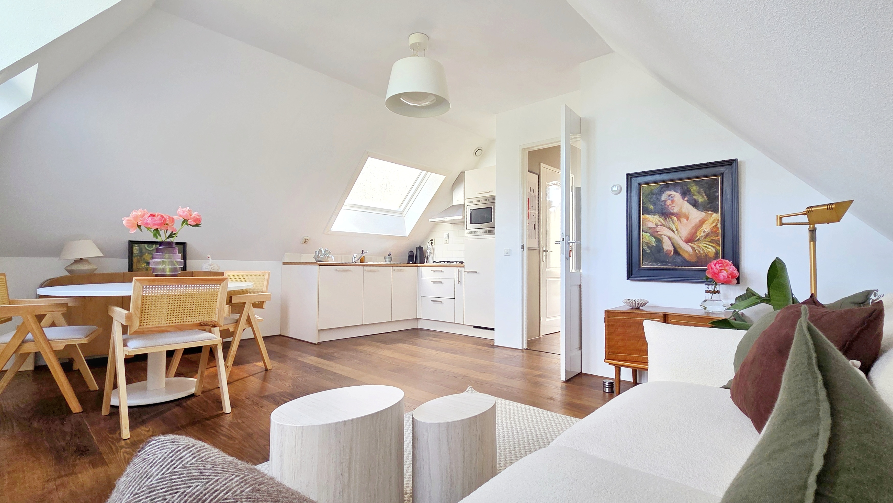

Central location
Edge of the Jordaan — canals, cafés and markets on foot.
The Apartment
Beams, sloped ceilings and natural light, with a separate bedroom and a private terrace.

The open living and kitchen area is arranged around light, beams and a lived-in rhythm: a place for coffee, cooking, reading and easy dinners at home.
A separate bedroom away from the main room: compact, calm and private, with the softer feeling of the attic architecture.
A practical full bathroom with both a bathtub and a shower, plus a separate WC that adds useful privacy when hosting.
A small terrace for coffee, plants and evening drinks: an extra breathing space above the city.
The hallway connects the rooms and the terrace, giving the apartment a clearer sense of separation than a single open studio.
The surrounding views are part of the atmosphere: water, rooflines, trees and the changing light around the Jordaan edge.
Small, considered, easy to live in.
Edge of the Jordaan — canals, cafés and markets on foot.
Multiple windows under beams and sloped ceilings.
A private retreat away from the open living space.
Coffee and evening drinks, looking over the green.
A full bathroom with both a bathtub and a shower.
A few useful details for daily living.
Storage is available inside the apartment, with additional private storage in the basement.
A washing machine is available in the apartment.
A TV is available and can be used during the stay.
Public paid parking is available on the surrounding streets.
A new kitchen is scheduled for installation in September, with a stone worktop and all-new appliances including a dishwasher, fridge-freezer, and combi oven/microwave.
Here's how a home exchange would work.